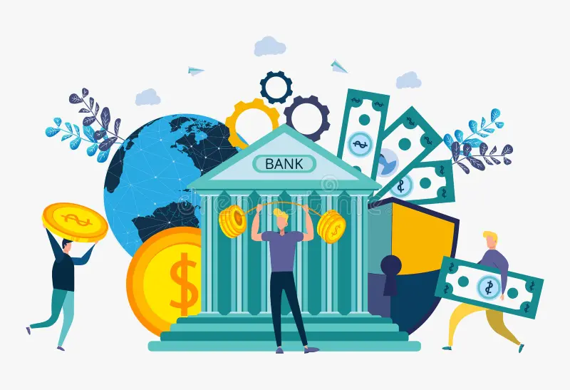
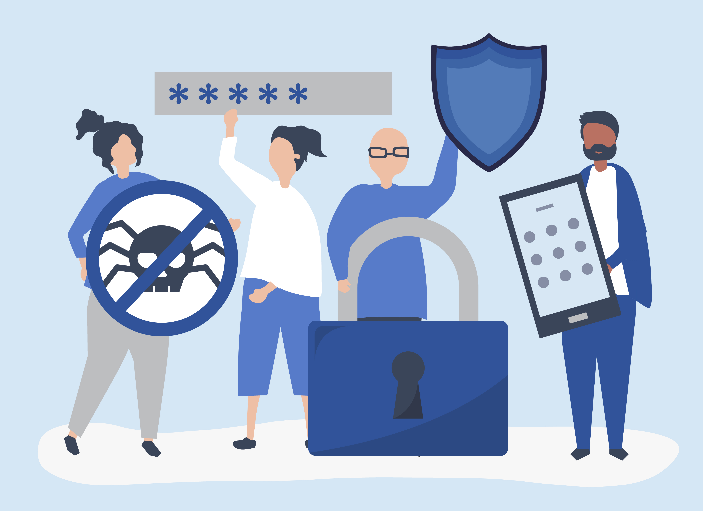

Виды деятельности
Здесь вы найдете подробные статьи и ресурсы, описывающие различные области интернет-деятельности.
Социальные сети:
Виртуальные платформы, такие как Telegram и VK,
стали не просто местом для общения, но и площадкой для взаимодействия с друзьями,
обмена контентом, а также участия в обсуждениях на самые разные темы.
Это место, где мы создаем цифровую идентичность и поддерживаем связи в онлайн-пространстве.
Онлайн-образование:
С возрастанием популярности онлайн-образования, мы получаем знания, пройдя курсы, вебинары и используя электронные учебники.
Это открывает новые горизонты обучения, предоставляя доступ к курсам от ведущих университетов и экспертов по всему миру.
Электронная коммерция:
Онлайн-магазины и торговые платформы, такие как Ozon,
Wildberries и Aliexpress
предоставляют возможность удобно приобретать и продавать товары и услуги, не покидая дом.
Электронная коммерция стала частью нашего повседневного образа жизни.
Стриминг медиа:
YouTube, Netflix,
Spotify и Twitch
предоставляют возможность наслаждаться видео, музыкой и стримами в режиме реального времени.
Пользователи имеют доступ к бесконечному потоку развлечений, а создатели контента могут поделиться своим творчеством.
Работа и фриланс:
Интернет предоставляет уникальную возможность поиска работы, фриланса и удаленной занятости через специализированные платформы.
Это расширяет географические рамки поиска возможностей для трудоустройства.
Игры в сети:
Многопользовательские онлайн-игры стали популярным видом развлечения.
Игроки со всего мира могут взаимодействовать, создавая цифровые коммуны и участвуя в захватывающих приключениях вместе.
Блоггинг и контент-создание:

Платформы, такие как YouTube и TikTok,
предоставляют возможность создавать и публиковать контент в различных форматах.
От блогов и влогов до подкастов, пользователи могут делиться своим творчеством и мнениями с миром.
Финансовые операции:

Интернет-банкинг, онлайн-платежи, инвестиции и криптовалюты стали частью нашей финансовой жизни.
Пользователи могут управлять своими финансами в режиме онлайн, совершая операции в любое удобное время.
Поиск информации:
Поисковые системы позволяют нам быстро находить информацию на различные темы.
Этот инструмент стал неотъемлемой частью нашего ежедневного поиска знаний.
Самый популярный сервис для поиска информации да данный момент - Wikipedia
Телемедицина:
В онлайн-режиме мы можем получить медицинские консультации и услуги, не покидая дом.
Телемедицина обеспечивает доступ к заботе о здоровье в удобное для нас время.
Безопасность

Жизнь в онлайн-пространстве предоставляет нам уникальные возможности,
но вместе с этим приходит и необходимость обеспечения безопасности.
Наши цифровые следы оставляются повсюду, и важно уделять особое внимание защите себя и своих данных.
Помимо полезной информации, в интернете много мошенников, готовых использовать наш интерес к новостям,
онлайн-покупкам и социальным сетям. Для того чтобы наслаждаться всеми преимуществами онлайн-мира,
необходимо быть бдительными и обладать цифровой грамотностью.
На данном ресурсе предлагаются полезные советы по обеспечению безопасности в интернете.
Рассмотрим защиту личных данных, секреты безопасного онлайн-шопинга, советы по укреплению паролей и многое другое.
Правильное сочетание возможностей интернета с осознанной осторожностью помогут вам наслаждаться интернетом,
минимизируя риски и сохраняя личную безопасность.
·Укрепите пароли: Используйте уникальные и сложные пароли для каждого аккаунта.
Избегайте использования личных данных или легко угадываемых комбинаций. Регулярно меняйте пароли.
·Включите двухфакторную аутентификацию: Активируйте двухфакторную аутентификацию для своих аккаунтов,
где это возможно. Это добавляет дополнительный уровень защиты.
·Обновляйте программное обеспечение: Регулярно обновляйте операционные системы,
браузеры и антивирусное программное обеспечение. Обновления часто включают исправления уязвимостей.
·Будьте осторожны с почтой: Не открывайте вложения или не кликайте на ссылки в письмах от незнакомых отправителей.
Это может быть спам или фишинговая атака.
·Используйте надежные сети Wi-Fi: Избегайте подключения к открытым или ненадежным Wi-Fi сетям.
Предпочтительно использовать виртуальные частные сети (VPN) для дополнительной защиты.
·Осмотритесь перед скачиванием: Будьте осторожны при скачивании файлов из интернета.
Проверяйте источники, используйте официальные и проверенные ресурсы.
·Ограничьте информацию в социальных сетях: Контролируйте доступ к вашей личной информации в социальных сетях.
Не разглашайте чувствительные данные публично.
·Будьте бдительны на онлайн-рынках: При онлайн-покупках предпочитайте надежные магазины.
Проверяйте отзывы и удостоверяйтесь в безопасности платежных систем.
·Защитите свои устройства: Устанавливайте антивирусное программное обеспечение на все ваши устройства
и регулярно сканируйте их на наличие вредоносных программ.
·Будьте внимательными к фишингу: Постоянно обращайте внимание на подозрительные запросы,
веб-сайты или электронные сообщения, которые могут пытаться выманить вашу личную информацию.
Соблюдение этих советов поможет вам укрепить свою безопасность в онлайн-мире.